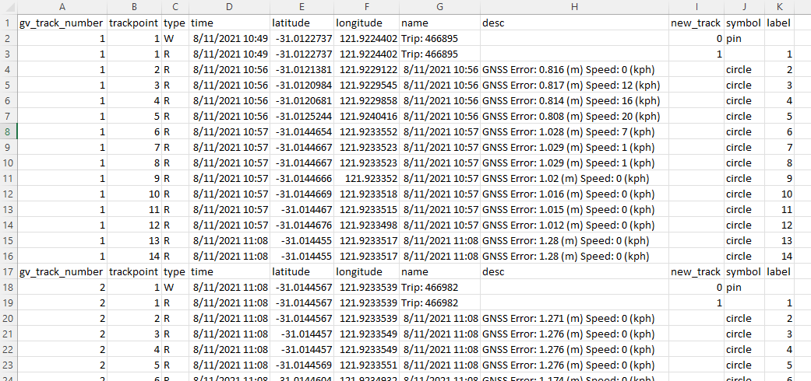
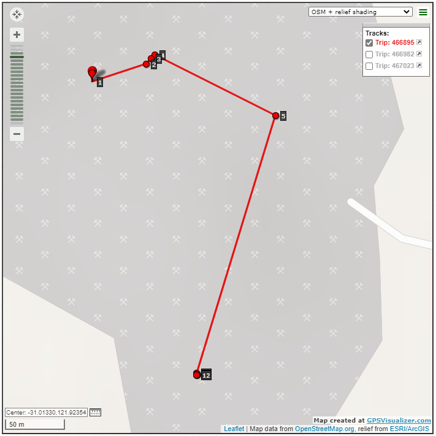

The application allows exporting of the GNSS log for the currently selected trip, all trips in the log file, or all filtered trips (refer to Event Filtering). The export options are available from the application menu if a log file is loaded, with the exception of the "All trips (filtered)" option which is only available if a filter has been applied. Once selected, a file selection dialog is presented allowing the user to select the file to export to.

Exporting is in plain text (.csv) and is essentially a list of GNSS coordinates reported in all events in a trip or trips. The exception being that if the GNSS location in an event is lat/long 0/0 the coordinate is not reported as this is the default reported when there is no GNSS information
If exporting GNSS data for all trips is selected, all trips are exported to a single file.
If exporting data for all filtered trips is selected, all trips matching the filter are exported to a single file. Note that trips mathcing the filter are always displayed in the Trip Data pane when the filter is applied.
An excerpt of a GNSS log .csv export for all trips is shown below. Note that where a trip does not have any GNSS entries, that trip is not included in the export.
In the .csv log above there is a title row at the start of each trip. Also, there is a name filed in the title, which for a Fleet Controller is the trip ID, and for a Zoner is the Fleet ID of the controller.
The format of the GNSS log includes the time and latitude / longitude coordinates. The log export can be plotted using third party online tools, for example, GPSVisuliser https://www.gpsvisualizer.com". Using GPSVisuliser for the .csv GNSS log file above results in the following plot.
Note in the sample plot above the legend, where individual tracks are shown for each trip. Note that for Zoners only a single track is shown.
In the sample plot each track is assigned a different (random) colour, with a pin shown at the start of each track. Note that if tracks are turned off using the legend that the track pin, which is a waypoint for the track, is still displayed.